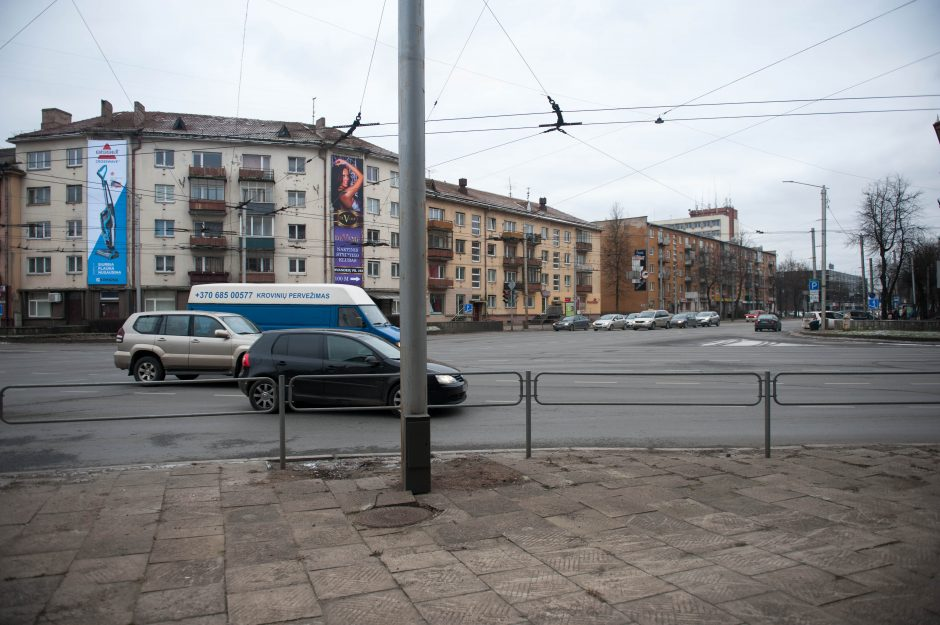

Welcome to vaizdo-kameros
Vaizdo stebėjimo kameros: Vilnius, Kaunas, Klaipėda, Šiauliai, Panevėžys
2020.10.27 11:24Skip to content Facebook Email Kur įsigyti? Lt Lv Ee Mano paskyra Registruotis Prekių krepšelis Produktai Spynos Vidaus durų spynos Išmaniosios spynos Padidinto saugumo spynos Elektrinės spynos Pakabinamos spynos Praėjimo kontrolė Cilindrai Centrinio rakto sistema Spynų priešspyniai Durų rankenos iNOVO rankenų linija DND rankenų linija Nerūdijančio plieno rankenos Išmaniosios rankenos Kitos durų rankenos Durų furnitūra Durų vyriai Sandarinimo tarpinės Automatiniai durų slenksčiai Durų akutės Durų pritraukėjai Cilindrų apdailos Durų fiksatoriai Durų atramos Stumdomu durų furnitūra Vartų automatika ir furnitūra Pakeliamų vartų automatika Stumdomų vartų automatika Varstomų vartų automatika Išmanioji vartų automatika Vartų automatikos priedai Vartų furnitūra Kelio barjerai Seifai Domofonai Vaizdo stebėjimo kameros Belaidės stebėjimo kameros IP Kameros WiFi Kameros Įrašymo įrenginiai Komplektai Priedai Protingas namas Smart seifai Kiemo ir garažo vartai Durų užraktai Išmaniosios durų rankenos Protingo namo valdikliai Jutikliai Apšvietimas ir el.prietaisai Durų skambučiai ir akutės Komplektai Priedai Vaizdo stebėjimo kameros Sprendimai viešbučiams Apie mus Patarimai Dizaineriams/architektams Pradinis / Produktai / Vaizdo stebėjimo kameros
Belaidės stebėjimo kameros
Belaidės vaizdo stebėjimo kameros veikiančios su baterijomis WiFi tinkle.
IP Kameros
Profesionalios IP kameros - tai pats efektyviausias sprendimas jūsų būsto apsaugai.
WiFi Kameros
Bevielio ryšio WiFi lauko ir vidaus apsaugos kameros. Paprastas montavimas ir instaliavimas.
Įrašymo įrenginiai
NVR PoE vaizdo įrašymo įrenginiai skirti IP kameroms. Galimi 4,8,16 PoE kanalų pasirinkimai.
Komplektai
Vaizdo stebėjimo kamerų komplektai - pilnai paruošti sprendimai vaizdo stebėjimui.
Priedai
Vaizdo stebėjimo sistemų priedai, SD kortelės, HDD/SD diskai, CAT5/6 kabeliai, kamerų laikikliai ir kt.
Produktai šioje kategorijoje: Rūšiuoti pagal: Numatytą Rūšiuoti pagal: Numatytą Rūšiuoti pagal: Pavadinimą Rūšiuoti pagal: Kainą Rūšiuoti pagal: Datą Rūšiuoti pagal: Populiarumą Rūšiuoti pagal: Reitingą Rodyti: 12 Produktų Rodyti: 12 Produktų Rodyti: 24 Produktų Rodyti: 36 ProduktųVaizdo stebėjimo 2MP Wi-Fi kamera su saulės 5.5W baterija
199.00 € Į krepšelį Apie prekęTermoskaitytuvas vaizdo kamera su temperatūros matavimu
1 179.00 € Į krepšelį Apie prekę %Hikvision 4MP kupolinė IP vaizdo kamera DS-2CD2345FWD-I F2.8 balta
199.00 € 159.00 € Į krepšelį Apie prekę4MP IP kupolinė vaizdo kamera balta
55.00 € Į krepšelį Apie prekę5MP IP kupolinė vaizdo kamera balta
65.00 € Į krepšelį Apie prekę5MP IP kupolinė vaizdo kamera balta su garsiakalbiu
69.00 € Į krepšelį Apie prekę5MP IP cilindrinė vaizdo kamera su garsiakalbiu balta
79.00 € Į krepšelį Apie prekę5MP IP cilindrinė vaizdo kamera balta
65.00 € Į krepšelį Apie prekę5MP IP cilindrinė vaizdo kamera juoda
69.00 € Į krepšelį Apie prekę5MP 72 LED IP cilindrinė vaizdo kamera juoda
79.00 € Į krepšelį Apie prekę5MP IP kupolinė vaizdo stebėjimo kamera juoda
75.00 € Į krepšelį Apie prekę5MP IP kupolinė vaizdo stebėjimo kamera su 2.8-12mm lęšiu juoda
79.00 € Į krepšelį Apie prekę 1 2 3 4 5 KitasVaizdo stebėjimo kameros
Kokybiškos vaizdo kameros, kurias siūlo Vairema, pasirūpins, kad Jūsų namai bei sodas visada būtų prižiūrimas ir saugomas. Kartais reikia tiek nedaug, kad gyvenimas būtų kur kas saugesnis ir tinkamai pasirinktos stebėjimo kameros – vienas geriausių egzistuojančių apsaugos būdų.
Vairema siūlo skirtingų tipų stebėjimo kameras, kurios atitinka skirtingų žmonių poreikius:
Belaidės stebėjimo kameros veikia Wi-Fi pagalba, tad jas paprasta reguliuoti ir net valdyti nuotoliniu būdu.
Wi-Fi kameros montuojamos ne tik lauke, tačiau ir patalpose, kad būtų galima užtikrinti optimalų saugumą paslaugas teikiančiose vietose, biuruose. Skubantiems ir norintiems tobulumo rekomenduojami jau suruošti komplektai, kuriuose yra viskas, ko reikia saugiems namams.
IP kameros rekomenduojamos būsto apsaugai.
Skirtingo pobūdžio įrašymo įrenginiai garantuoja, kad kiekvienas žingsnis žengtas kameros „akyse“ bus užfiksuotas.
Ir įvairūs priedai, kurie suteiks stebėjimo kameroms dar daugiau funkcionalumo. Tinkama vaizdo kamera – galimybė gyventi kur kas saugiau. Susidomėjote? Susisiekite su Vairema profesionalais, kurių patarimai pagreitins paieškas.
Vairema.lt – norintiems gyventi ypač saugiai.
Daugiau informacijos apie vaizdo stebėjimo kameras rasite čia: Vaizdo kameros
Vaizdo stebėjimo kameros Vilniuje: Verkių g. 46, Vilnius („Medžio centro“ pastatas). Žr.žemėlapyje
Vaizdo stebėjimo kameros Šiauliuose: Vytauto g. 110, Šiauliai. Žr.žemėlapyje
Vaizdo stebėjimo kameros Panevėžyje: Vasario 16-osios g. 26, Panevėžys. Žr.žemėlapyje
Vaizdo stebėjimo kameros Kaune: Pramones pr. 4E, Kaunas. Žr.žemėlapyje
Vaizdo stebėjimo kameros Klaipėdoje: Paryžiaus Komunos g. 25A, Klaipėda. Žr.žemėlapyje
Vaizdo stebėjimo kameros Rygoje: Kurzemes prospektā 23, Rīgā, LV-1067, Latvija. Žr.žemėlapyje
Produktų katalogas
Bez kategorijas Spynos Durų rankenos Durų furnitūra Vartų automatika ir furnitūra Seifai Domofonai Vaizdo stebėjimo kameros Belaidės stebėjimo kameros IP Kameros WiFi Kameros Įrašymo įrenginiai Komplektai Priedai Sprendimai viešbučiams Protingas namasProduktų filtras
Pagal gamintoją
ACME (7) Hikvision (4) Smart Home (16)Pagal kainą
Pagal spalvą-padengimą
Juoda (1)Pagal technologiją
Wi-Fi (16)UAB “Vairema”
Vytauto g. 110, LT-76345 Šiauliai
Įmonės kodas: 145351453
PVM mokėtojo kodas: LT453514515
www.vairema.lt
Meniu
Apie mus Produktai Patarimai Dizaineriams ir architektams Kur įsigyti? Pareiškimas apie slapukusProduktai
Spynos Durų rankenos Durų furnitūra Vartų automatika ir furnitūra Seifai Protingas namasE-parduotuvės taisyklės
© Copyright | UAB Vairema | All rights reserved.